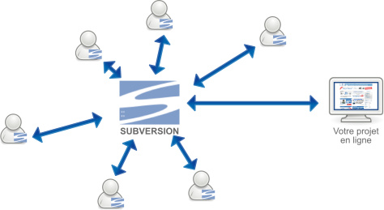

m'a (enfin) convaincu
2016
Matthieu Bréchet
Kévin Grandemange
~ 60 min

Quelles sont vos Attentes ?
Sommaire
- SVN
- c'est rapide !
- Comment apprendre à utiliser
- Nos bonnes pratiques pour éviter les ennuis
- & SCRUM
- un peu d'outils
- Fonctions avancées
- pour allez plus loin
SVN
SVN
GIT
| SVN | ||
|---|---|---|
| serveur | Centralisé | Distribué |
| sauvegarde | commit | commit & push |
| gestion des conflits | synchronisation + merge | rappatriement + merge |